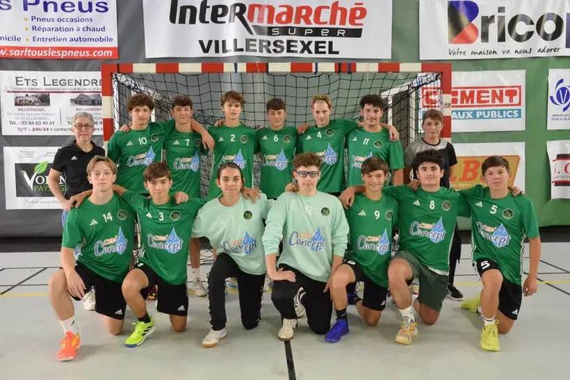
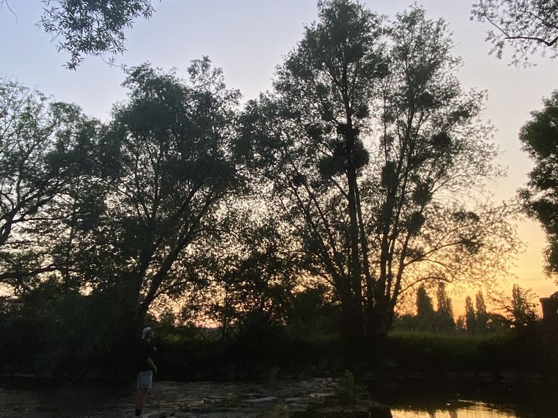

Formation
BUT Réseaux et Télécommunications
Réseaux, télécommunications, systèmes et sécurité : chaque semestre est rythmé par des SAÉ, des projets concrets réalisés en équipe ou en autonomie.
Technicien en alternance chez Scutum
Réseaux, télécoms & cybersécurité
Étudiant en 3e année de BUT Réseaux et Télécommunications à Montbéliard, en parcours cybersécurité. Alternant chez Scutum, à Rixheim, où j’interviens chez les clients pour installer, configurer et dépanner leurs systèmes de sécurité.
01 Parcours
Je partage mon temps entre ma formation à Montbéliard et Scutum. L’alternance me permet d’appliquer directement, chez les clients, ce que j’apprends en cours.
Formation
Réseaux, télécommunications, systèmes et sécurité : chaque semestre est rythmé par des SAÉ, des projets concrets réalisés en équipe ou en autonomie.
Alternance
Scutum propose des solutions de sécurité : vidéosurveillance, contrôle d’accès, anti-intrusion, sécurité incendie et télésurveillance.
Après le BUT
Après le BUT, je souhaite entrer dans la vie active et exercer le métier de technicien. Mon alternance m’a confirmé que j’apprécie le travail sur le terrain et le contact avec les clients.
02 Compétences
Les outils et notions que j’ai pratiqués pendant mes projets de BUT et en entreprise.
03 Projets
Mes SAÉ de BUT, avec pour chacune le rapport et les livrables sur GitHub.
SAÉ 4.Cyber.01 2e année
Déploiement d’une infrastructure de laboratoire avec pare-feu, DMZ, services sécurisés et détection d’intrusions.
Configuration des pare-feu et des services HTTP/HTTPS et FTP/FTPS, détection d’intrusions, scans de vulnérabilités et exercices de sécurité Wi-Fi et Man-in-the-Middle dans un environnement de test.
Le projet comprend aussi une étude de l’authentification par certificat et du SSO. La supervision et les VPN SSL/IPsec sont restés partiellement réalisés.
SAÉ 3.04 2e année
Des défis de cybersécurité pour analyser des traces d’attaque et comprendre des vulnérabilités.
Pour cette SAÉ, j’ai réalisé des challenges et rédigé un compte rendu de dix d’entre eux. C’était ma première expérience sur Root-Me.
Journaux Windows EVTX, Syslog Linux et logs Nginx : repérer des événements suspects et reconstituer les actions observées.
Recherche autour des référentiels CWE, CVE, CPE, CVSS et MITRE ATT&CK.
Déchiffrement avec Gpg4win et manipulation de requêtes HTTP avec Burp Suite dans un challenge Root-Me.
Pour chaque défi, j’ai décrit l’objectif, la méthode, les résultats et les notions utilisées. Le projet comprend un rapport et des vidéos de présentation.
SAÉ 2.4 1re année
Projet intégratif de cybersécurité sur un réseau de laboratoire et des applications volontairement vulnérables.
Cartographie des services, recherche de vulnérabilités et exercices d’analyse réseau et de sécurité web. Certaines tentatives d’exploitation n’ont pas abouti, comme indiqué dans les comptes rendus.
SAÉ 2.3 1re année
Application web permettant de consulter les données de vent associées aux villes de résidence et l’historique des recherches.
Collecte des données météo, import de données, recherche dans l’interface et calcul du vent médian collectif.
SAÉ 2.2 1re année
Caractérisation du son numérisé et comparaison des paramètres de codecs dans un environnement VoIP.
Configuration d’un environnement VoIP, étude de la latence, de l’échantillonnage, de la bande passante et du rapport signal/bruit. Le rapport présente également une comparaison de la qualité d’écoute.
SAÉ 2.1 1re année
Adressage, services réseau et configuration des équipements pour une infrastructure de petite structure.
Plan d’adressage, simulation DHCP, services de déploiement et de partage, segmentation VLAN et vérifications des configurations.
SAÉ 1.5 1re année
Programmation d’un robot pour parcourir un circuit en huit, compter les tours et les signaler par des LED.
Lecture des capteurs, commande des moteurs et changement de couleur des LED selon l’avancement du parcours.
SAÉ 1.4 1re année
Création d’un premier site personnel en HTML et CSS, avec présentation, centres d’intérêt et contacts.
Pages de présentation, navigation, mise en page et intégration de photographies.
SAÉ 1.3 1re année
Étude de la transmission Wi-Fi et comparaison de la puissance reçue pour différents types d’antennes.
Mise en place du réseau Wi-Fi et comparaison des calculs de puissance reçue selon la distance et les gains d’antenne.
SAÉ 1.2 1re année
Découverte des réseaux sur PC et Raspberry Pi : analyse du trafic, accès distant et partage de fichiers.
Identification des adresses IP et MAC, observation des échanges réseau, connexion SSH et mise en place de partages.
SAÉ 1.1 1re année
Une initiation aux fondamentaux des réseaux, accompagnée du badge Cisco Networking Basics.
Badge Cisco Networking Basics obtenu dans le cadre de ma première année.
04 Homelab
Chez moi, j’ai monté une petite infrastructure sur du matériel de récupération : une tour qui fait tourner une quinzaine de services en conteneurs Docker, et un Raspberry Pi 5 allumé 24 h/24. Tout l’accès à distance passe par un VPN, sans aucun port ouvert sur la box.
Clients
Réseau privé
Serveurs
Serveur principal
Tous les services sont décrits dans un seul fichier Docker Compose, avec des limites de mémoire pour tenir dans 16 Go. La carte graphique sert à l’IA locale et au transcodage vidéo. Vaultwarden, Radicale et AdGuard Home y restent le temps de leur bascule vers le Pi.
Services 24 h/24
Il porte les services qui doivent rester allumés en permanence. Installé automatiquement avec cloud-init, il sert de DNS à tout le réseau privé.
Sécurité
Ce que j’ai appris
tailscale status, puis reconnexion.chkdsk en lecture seule, sans jamais écrire sur un disque qui lâche.La suite
Monté avec l’aide d’un assistant IA : j’ai fait les choix d’architecture, les manipulations physiques et validé chaque étape sensible.
05 Passions

Sport
Je joue au HBC Lure Villers depuis l’âge de 9 ans. Le handball, c’est le plaisir du jeu en équipe, un moment pour décompresser et retrouver mes amis.

Créativité
J’aime capturer les paysages, la lumière et les couchers de soleil. La photographie me permet de garder une trace des moments et des lieux découverts au fil de mes voyages.
Découverte
J’aime découvrir de nouveaux paysages, explorer d’autres cultures et sortir de mon quotidien. Chaque voyage est l’occasion de vivre de nouvelles expériences et de revenir avec des souvenirs à partager.
06 Contact
Pour échanger sur mon parcours, ma formation ou mes projets, écrivez-moi ou appelez-moi.